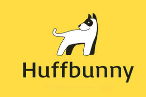

Trade Mark Journal No.2025/033 15 August 2025
UK00004243111 1 August 2025 (3,7,8,16,21,28,35)

- Class 3
- Pet shampoos; Non-medicated pet shampoos; Pet odor removers; Pet stain removers; Non-medicated mouth washes for pets; Shampoos for pets; Pets (Shampoos for -); Moist wipes impregnated with a cosmetic lotion; Deodorants for pets; Disposable wipes impregnated with cleansing compounds for use on the face; Cologne impregnated disposable wipes; Shampoos for pets [non-medicated grooming preparations]; Wipes impregnated with a cleaning preparation; Animal grooming preparations; Shampoos for animals [non-medicated grooming preparations]; Hair grooming preparations; Shampoo for animals; Cosmetics for animals; Deodorants for animals; Cleaning preparations for animal cages; Conditioning sprays for animals; Foot balms (Non-medicated -); Non-medicated toothpaste; Non-medicated sun care preparations; Non-medicated face care preparations; Foot care preparations (Non-medicated -); Preparations and products for fur care; Eye care products, non-medicated; Skin care products for animals; Balms other than for medical purposes; Deodorants for human beings or for animals.
- Class 7
- Hair clippers [machines] for animals; Grooming machines for clipping animals hair; Hair trimmers for animals [machines]; Clippers for use on animals [machines]; Hair clipping machines for animals; Hair cutting machines for animals; Hair shearing machines for animals; Shearing machines for animals; Animal shearing machines; Electric scissors; Scissors, electric; Wood scissors (Electric -); Mechanized feeders for animals; Electronic feeders for animals.
- Class 8
- Nail clippers; Hand-operated nail clippers for pets; Dog clippers; Hair clippers; Nail scissors; Nail clippers, electric or non-electric; Battery-powered animal nail grinders; Electric animal nail grinders; Hair clippers for animals [hand instruments]; Electric hair clippers for animals [hand instruments]; Claw sharpening instruments for pets; Nail buffers; Manual clippers; Hand-operated hygienic and beauty implements for humans and animals; Clippers for use on animals [hand-operated]; Scissors for household use; Scissors; Tweezers; Nail nippers [hand tools]; Hair cutting scissors; Hand-operated hair clippers.
- Class 16
- Paper wipes for cleaning; Paper pet crate mats; Paper wipes; Disposable absorbent underpads for pets; Cellulose wipes; Disposable absorbent training pads for pets; Scoops made of card for the disposal of pet excrement; Plastic bags for disposing of pet waste; Plastic bags for pet waste disposal.
- Class 21
- Pet lick mats; Pet paw cleaners, non-electric; Brushes for grooming pet animals; Pet grooming glove; Litter trays for pet animals; Deshedding brushes for pets; Litter scoops for use with pet animals; Brushes for pets; Electric pet brushes; Pet feeding dishes; Food containers for pet animals; Dispensers for cellulose wipes, for household use; Pet treat jars; Toothbrushes for pets; Household containers for storing pet food; Trays (Litter -) for pets; Litter trays for pets; Pet feeding bowls; Non-mechanized pet waterers in the nature of portable water and fluid dispensers for pets; Deshedding combs for pets; De-shedding combs for pets; Dispensers for paper wipes [other than fixed]; Raccoon dog hair for brushes; Cages for household pets; Pets (Cages for household -); Pet drinking bowls; Plastic containers for dispensing food to pets; Animal-activated pet feeders; Electronic pet feeders; Cages for pets; Automatic pet feeders; Pet feeding and drinking bowls; Pet feeding bowls, automatic; Hand tools for the application of cosmetics; Animal grooming gloves; Wire cages for household pets; Litter boxes for pets; Automatic litter boxes for pets; Cages for carrying pets; Nail brushes; Combs for animals; Fur brushes for animals; Toothbrushes for animals; Combs for use on domestic animals; Dog food scoops; Hair brushes; Animal activated animal feeders; Non-mechanized animal feeders; Small animal feeders.
- Class 28
- Pet toys; Toys for pet animals; Pet toys containing catnip; Snuffle mats being dog toys; Toys for pets; Pet toys made of rope; Toys and playthings for pet animals; Dog toys; Toys for domestic pets; Toys, games and playthings for pet animals; Toy dogs; Whack-a-mole toys for pets; Toy tools; Toys and playthings for pets; Toys for dogs; Toys for animals; Toy animals; Stuffed animals [toys]; Stuffed toy animals.
- Class 35
- Retail services in relation to animal grooming preparations; Wholesale services in relation to animal grooming preparations; Business management of wholesale and retail outlets; Business management of retail outlets; Administration of the business affairs of retail stores; Retail services in relation to toys; Retail services in relation to pet products; Business management of wholesale outlets; Online retail services relating to toys; Wholesale services in relation to toys; Wholesale services in relation to litter for animals; Retail services in relation to cleaning preparations.
THE MIRADIHA GROUP LTD